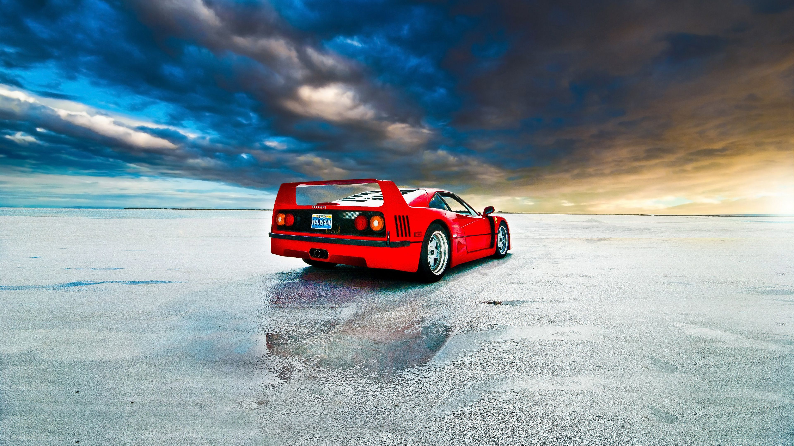
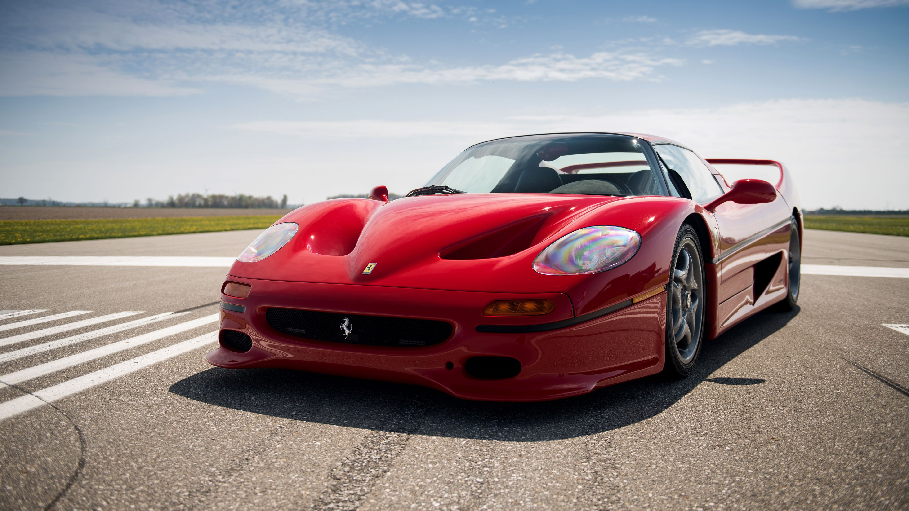

Ferrari F40
Ferrari F40 - Italijos automobilių gamintojos Ferrari sportinis automobilis, varomas galiniais ratais. Šis modelis buvo gaminamas nuo 1987 iki 1992 m. Nuo 1987 iki 1989 m. Ferrari F40 buvo laikomas greičiausiu serijiniu automobiliu pasaulyje. Taip pat F40 jo gaminimo metais buvo pats greičiausias, brangiausias ir galingiausias Ferrari modelis.
Pačioje gamybos pradžioje šis modelis kainavo nuo 400 000 $, tačiau vėliau buvo faktų, kai už F40 buvo sumokėta ir apie 1,6 milijono $.
Tuo metu F40 buvo pagamintas, norint konkuruoti su tokiais modeliais kaip Porsche 959 ar Lamborghini Countach. F40 tapo paskutiniu modeliu, kurį kuriant dar gyveno Ferrari įkūrėjas Enzo Ferrari. Šį automobilį pakeitė „Ferrari F50“.

Ferrari F50